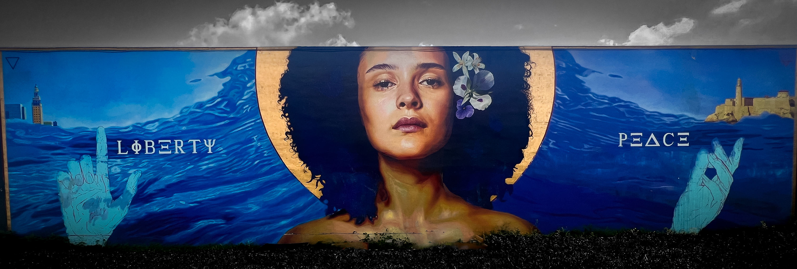

Hey everyone! Welcome to my HTML portfolio!
This is a website that will have some information about me,
my goals, and hobbies. If you have any questions,
please feel free to email me.
The Start:
I am a 38 year old who loves tech! I have liked technology
since I was in elementary school.

A picture I took of graffiti art in Miami, Fl.
In fact, my dream job back in the 1990's was to work for Microsoft.
I have a little bit of college experience with computer science.
I went to DeVry University from 2008 to 2011.
I majored in Computer information Systems with an emphasis on cybersecurity.
I did not complete the program due to financial issues.
It is a point of my life that I regret not finishing.
What brought me to CodingTemple?
Technology is always evolving!
I REALLY like graffiti art!
I came to CodingTemple because I wanted to FINALLY finish the goals that
I had in 2008 at DeVry:
land a good career in a field that I have been interested in my whole life!
From 2011 to now, I have worked jobs that I did not
enjoy just to make ends meet and to get by.
Career Change:
I've always felt like a hamster in a hamster cage
spinning around in circles when it came to jobs.
A picture I took while taking a hike.
I worked jobs because I had to in order to survive,
but I didn't enjoy any of them.
This past January, I first saw an ad on Instagram about CodingTemple.
I clicked it, read through it, and closed it.
I didn't think the program was real - meaning I felt like it was another version of DeVry.
The biggest reason why I didn't finish DeVry is because I ran out of financial aid.
On top of that, DeVry used false information when it came to the
percentage of graduates that got jobs with their programs.
Taking The Risk:
My motto throughout my life has been "Take the risk or
lose the chance".
Taking the harder path has its rewards.
Again, when I saw the Instagram ad for CodingTemple, I thought it would be another
version of DeVry but something about the program was tugging at my heart strings.
When I quit my last job at the beginning of June,
I knew that whereever I was going to work next was going to be the start of a career
for me because I am tired of feeling unfulfilled when it comes to a job.
It was at that point I decided to give CodingTemple a go.
It is another financial investment that I am going to have to commit to but
it's one that I feel is necessary for me to be where I want to be in order
to live my best life.